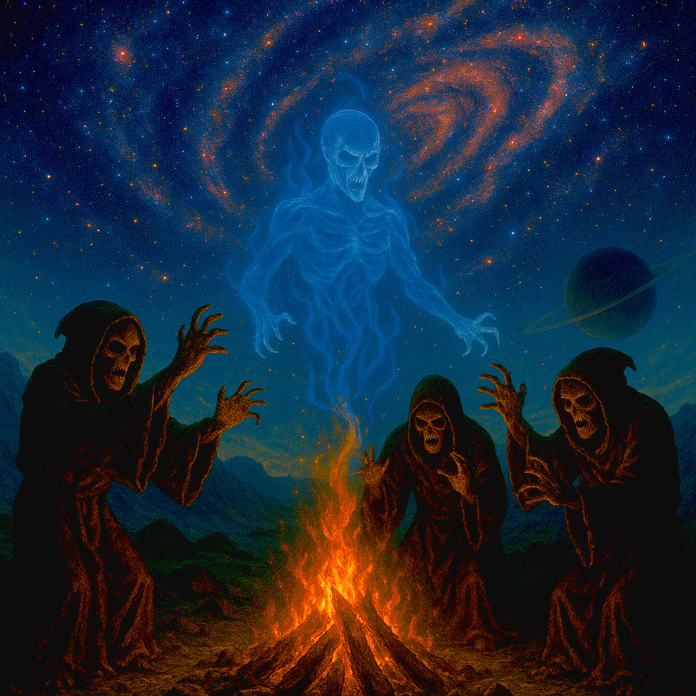
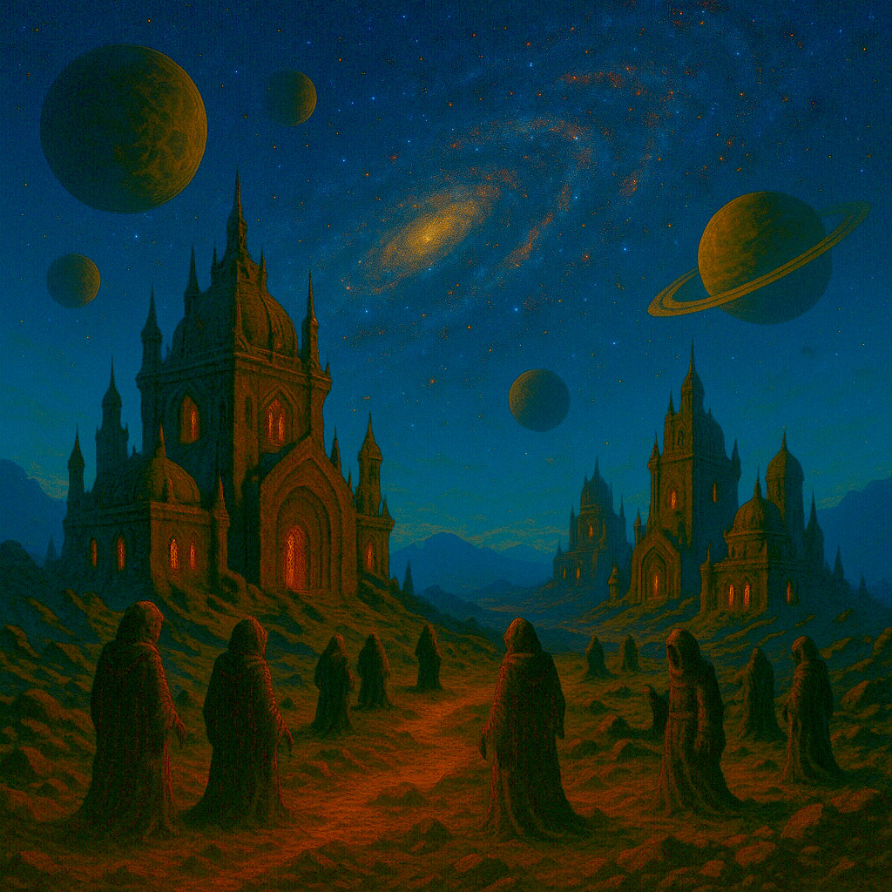
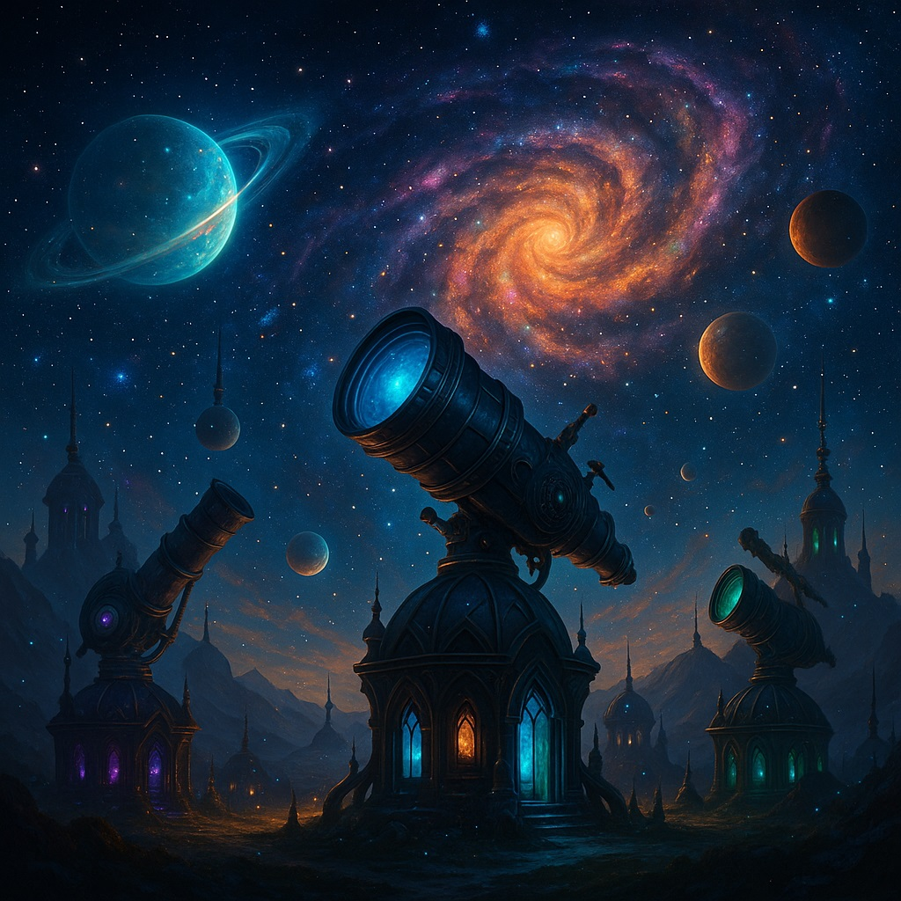

A lélekfaragók lélekenergiát formálnak mágikus tárgyakká és fegyverekké. Szertartásaik során megidézik az ősi szellemeket, akiktől energiát kölcsönöznek, majd meghozzák az áldozatot.

A lélekfaragók nem csak egy bolygón laknak, hanem egy egész bolygórendszerrel rendelkeznek. Törzsekbe tömörülnek, amelyek belaknak egy-egy ilyen bolygót. A törzsek szoktak egymással kereskedni, és a különböző törzsek tagjai sokszor meglátogatják egymást.

A lélekfalók galaxisa nagyon gyönyörű. Nem csoda, hiszen a lélekenergia egy nagy részét arra fordítják, hogy a galaxisukat élhetővé tegyék.
